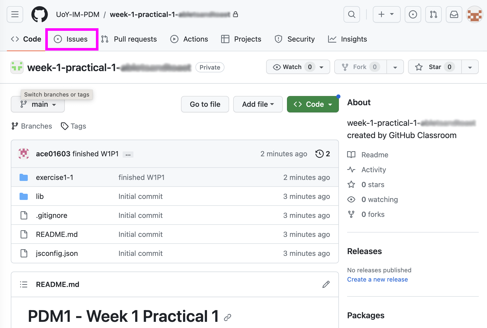
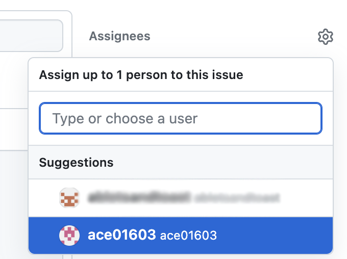

If you get stuck on an exercise after a scheduled practical session, or you have questions about code we've covered in class, you can request help from an instructor via GitHub.com. Follow the steps below.
Asking for help with your own code
- Make sure all local changes in the repo you need help with are committed and pushed to your remote repo.
- Open the repo you would like help with on GitHub.com. From GitHub Desktop, you can right-click the name of a selected repo (under "Current Repository" in the top left) and choose "View on GitHub...". You should also be able to go to GitHub.com, log in, and find the repo in the list of your repositories (usually on the left side of your home page).
- When you view the repo in your browser, the code tab will be selected. Switch to the "Issues" tab, highlighted in
the screenshot below.
 - On the issues tab, click the "New issue" button. This will load the issue form.
- Give the issue a descriptive title and provide details in the description box. The more detail you can give the better. At a minimum, provide the exercise you're working on (e.g. W1P2 exercise 1-2). If there is a particular line number for the problem / question, provide that too. If you have a bug, it can help to describe what you were trying to do, what's actually happening, and anything you've already tried.
- You'll need to assign the issue to an instructor so that they will be notified of your question. You can assign
an issue by clicking the settings icon next to "Assignees" in the box on the right of the issue form. Select an
instructor (ace01603 for PDM1) from the pop up.
 - Click "Submit new issue". The instructor will be notified that there is a new issue for them to look at. If you solve your own problem before you get a response, you can open the issue (from the Issues tab in the repo) and click the "Close issue" button.
- Depending on your notification settings, you should receive an email when you have a reply. You can also go to your Issues tab and check for comments. The instructor may close the issue after answering your question. If this is the case, you will have to switch the view to closed issues to find it (only open issues are shown by default). If the issue has been closed but the reply doesn't answer your question, you can click the "Reopen issue" button and add a new comment with more detail.
Asking for help with the example code repo
- Open the example code repo in your browser.
- Go to the Issues tab. Skim any existing issues (including closed issues) to see if your question has already been asked. If no-one else has asked your question, click the "New issue" button.
- Enter a descriptive title and detailed description of your question. If the question is about a specific example or sample solution, state exactly which file you have questions about. If there is a bug, please provide as much information as you can.
- Unlike raising issues on your own code, you won't be able to assign the issue to anyone. Instructors will check the example code issues regularly but you can also tag an instructor in the description using @ followed by their username e.g. @ace01603.
Answering issues on the example code repo
You are encouraged to answer issues on the example code repo. It should go without saying but, please be respectful to your peers and instructors. If you comment on an issue, please don't close it unless you raised the issue yourself.